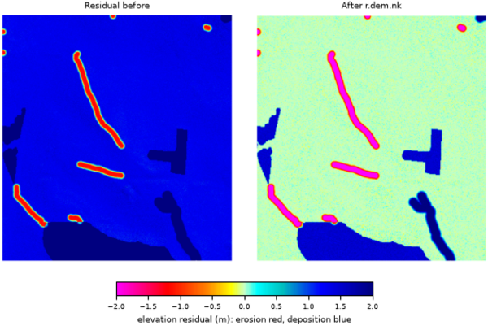

r.dem.nk implements the Nuth and Kääb (2011) algorithm for co-registering two Digital Elevation Models (DEMs). The algorithm estimates and corrects for vertical and horizontal offsets between the DEMs by minimizing elevation differences on stable terrain.
For stable terrain pixels:
dh = SfM - LiDAR
approx. delta_x * tan(slope) * cos(aspect)
+ delta_y * tan(slope) * sin(aspect)
+ delta_z
Where delta_x (east), delta_y (north),
delta_z (vertical) are solved by ordinary least squares using
raster-wide sums computed internally. Only stable-terrain cells whose slope
lies between slope_min and slope_max (degrees; defaults 2 and 85)
enter the regression, excluding near-flat and near-vertical cells.
The linear model above is only first order, so a single pass under-estimates shifts larger than one cell. The module therefore solves the increment on a working surface, accumulates it into the running transform, re-warps the working surface from the original SfM by the accumulated transform, and repeats until the increment falls below tol (in map units) or max_iter outer passes are reached. If the passes do not converge, a warning is issued and the last estimate is used.
The solved offsets are applied as a single inverse warp: each output cell at
map coordinate (x, y) samples the original SfM at
(x + delta_x, y + delta_y) (using interp) and subtracts
delta_z. No region shifting or external resampling tool is
involved.
Optional iterative sigma-clipping on residuals (iters per outer pass) reduces outlier influence during each solve.
The module always writes a residual raster named output_resid
which contains output - lidar on the stable-terrain mask used for
regression. When -k is provided, additional intermediate rasters are
written: output_slope, output_aspect, and
output_mask.
transform_output writes the solved offsets (dz,
dx, dy) to a small text file.
apply_transform reads such a file and applies it directly, skipping the
regression. This lets a transform solved on one surface (for example a clean
bare-earth DTM) be replayed onto another surface from the same acquisition (for
example its DSM) so both share the same horizontal alignment. In apply mode the
stable_mask is used only to define the reported residual raster, so a
near-flat mask no longer triggers the "not enough valid pixels" error.
The model is first order in the elevation difference, so a smooth
long-wavelength vertical bias, such as photogrammetric doming, is partly
degenerate with a horizontal shift: over sloped terrain a gentle tilt and a
translation produce a similar dh pattern. When both are present
the solve splits the signal between them and the reported dx and
dy absorb part of the doming.
Estimate the alignment on a surface where the long-wavelength component is small, or remove it first, and treat the horizontal offsets with suspicion when the residual after co-registration still shows a broad, smoothly varying pattern. r.dem.bias method=spline is the tool for the long-wavelength part, and it operates on the difference rather than on the DEM pair, so it runs after this step.
The stable_mask must cover broad, sloped, unchanged terrain. Flat features such as roads and parking lots are filtered out by slope_min and carry no aspect information, so a mask built from them alone leaves the horizontal offsets poorly constrained. Those features belong in the PGCP vertical step of r.dem.coregister instead.
The commands below use the example scene built in the r.dem toolset manual, which is derived from the North Carolina sample dataset. Build it there first.
Solve the offset of the misregistered surface against the lidar reference. The stable mask must be broad, sloped terrain, not the flat roads used for the PGCP step:
g.region raster=elev_lid792_1m
r.dem.nk sfm=dsm_offset lidar=elev_lid792_1m \
stable_mask=stable_terrain output=dsm_nk \
transform_output=nk_transform.txt
The applied offset was 0.4596 m east, 0.4596 m north, and 1.32 m up, and the solve returns it:
Converged transform: dz=1.320551 dx=0.449873 dy=0.457072
Replay the saved transform onto another surface from the same acquisition, so a DSM and a DTM end up sharing one horizontal alignment:
r.dem.nk sfm=dsm_offset lidar=elev_lid792_1m stable_mask=stable_terrain \
output=dsm_nk_replay apply_transform=nk_transform.txt

Corey T. White, Center for Geospatial Analytics, NC State University
{kind=link}